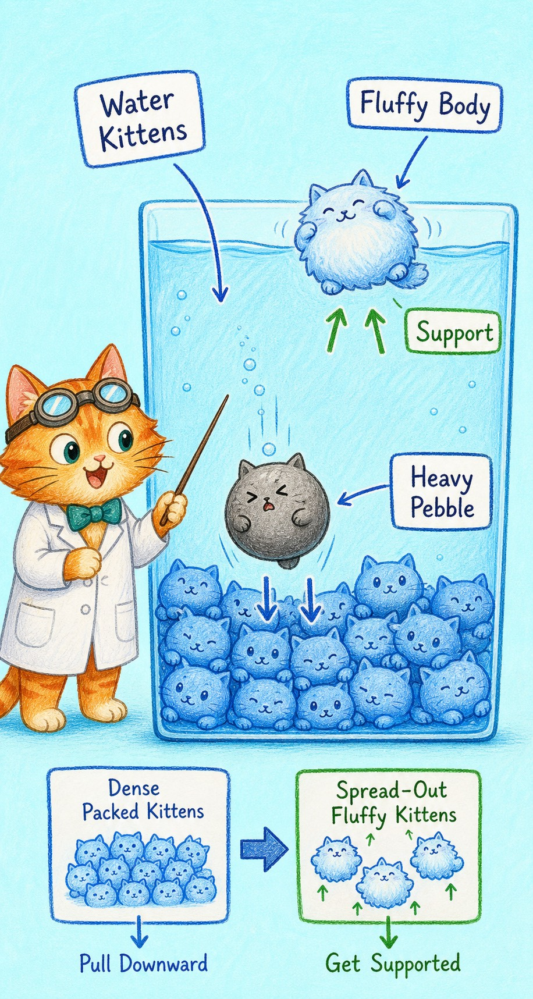
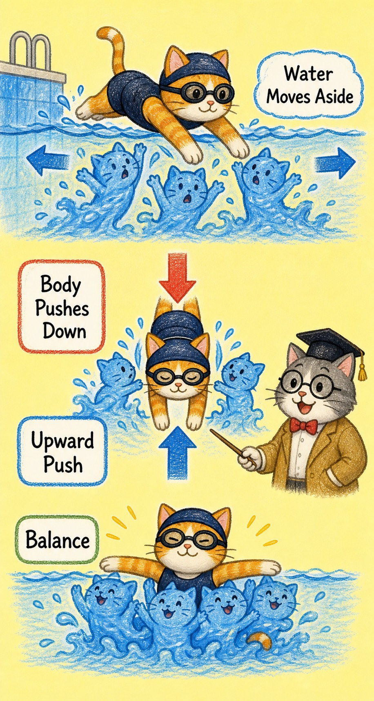
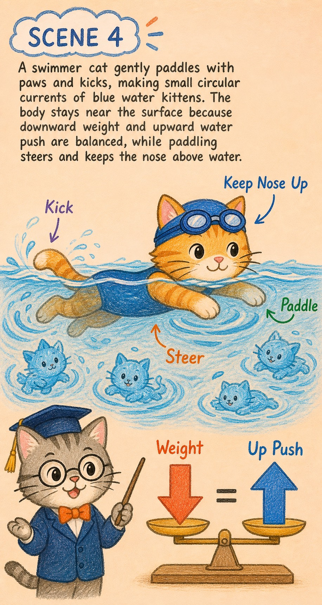
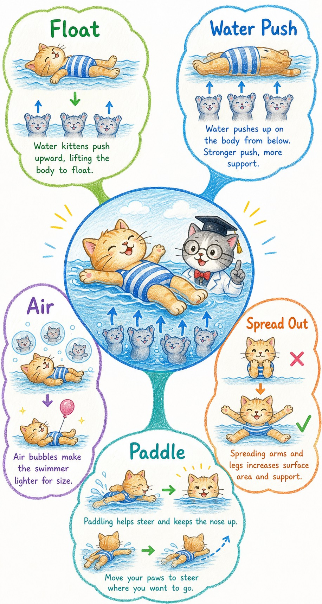

喵博士的小猫宇宙笔记
游泳为什么能浮在水上不沉下去？
喵呜，探险家，我们今天要一起趴在水边，把水面那层亮晶晶的秘密掀开一点点。
一、核心翻译
在我们的世界里，那其实是水里有一大群看不见的小水猫，在用软软的爪垫往上托住你。
当身体进入水里，会把一部分小水猫挤到旁边去。小水猫们不喜欢被挤得没地方站，于是它们会挤回来，形成一股往上的托举力。你的身体也有往下落的重量。只要小水猫往上托的力差不多追上了身体往下压的力，你就不会一直沉下去。
浮起来的关键不是水突然变硬了，而是身体占了水的位置，水里的小猫团队就会集体把你往上顶。
二、故事板：小水猫救援队
- 小水猫排成软垫，重重的小石猫会穿过软垫往下掉。
- 游泳猫一进水，挤开的水越多，回来托它的小水猫越多。
- 身体放松、吸进空气、四肢摊开，会让身体像蓬松的猫肚皮，更容易被托住。
- 划水不是主要把人“托飞”，而是帮助身体保持姿势、前进、把鼻子留在水面上。
三、场景一：水面下的软垫
小水猫们密密地排在一起，像一张会反弹的蓝色软垫。小石头很小却很重，挤开的水少，得到的托举也少，所以它容易往下沉。人的身体比小石头大很多，能挤开更多水，也就能召来更多小水猫帮忙托举。

四、场景二：你挤开水，水托回你
当游泳猫钻进水里，它的身体把原本待在那里的小水猫推开。被推开的水越多，小水猫回来的队伍越壮。于是水对身体发出一个向上的回抱，这就是为什么人会觉得水里身体变轻了。

五、场景三：放松和呼吸让身体变蓬松
会游泳的人常说要放松，这在小猫宇宙里非常重要。紧张时身体蜷成硬硬的一团，像把猫毛都压扁了；放松、吸气、四肢展开时，胸口和肚子里的空气泡泡猫会把身体撑得更蓬松。身体同样重，却占了更大的空间，小水猫就更容易把你托起来。

六、场景四：划水让鼻子和方向保持正确
人在水里并不是只靠划水才不沉。真正一直托着身体的，是小水猫的上托。划水和踢腿更像是在对小水猫说：请往这边流、请让我往前走、请让我把头保持在合适的位置。浮力负责托住，动作负责调整。

七、喵博士总结图
所以，游泳能浮起来，是因为身体挤开水，水就往上托；身体越蓬松、越放松、越会调整姿势，就越容易让托举和重量保持平衡。

这就是喵博士与探险家共同找到的答案：会浮起来的人，不是战胜了水，而是学会让小水猫们稳稳托住自己的轻盈。